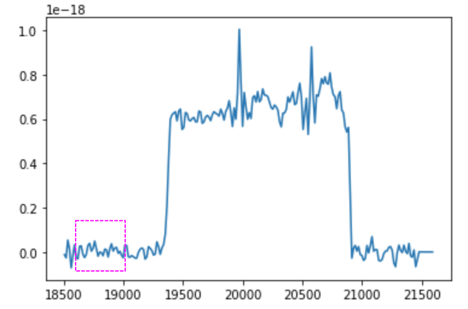

Uncertainties¶
In order to calculate uncertainties, set uncertainty_bool=True as an argument of a fitting function (i.e. cube.fit_cube() or cube.fit_region()).
Since uncertainty estimates are often crucial in astrophysical calculations, we apply a full Bayesian MCMC approach (using the python module emcee). The likelihood function is defined as a standard Gaussian function. Additionally, we employ the same priors described above for the fitting function bounds.
Likelihood Function¶
We assume a standard Gaussian likelihood function. Note that \(\sigma\) is the error on the measurement (also noted as noise – see next section).
Noise Calculation¶
In order to estimate the uncertainties (and complete the fits), we assume a homogenous noise level associated with the the instrument. This is then accepted as the noise over the entire spectrum in the filter. This is calculated for each individual spectrum by considering a region outside of the filter (i.e. where the transmission is zero). We then take the noise as the standard deviation of the region. This is typically on the order of 1% of the flux in high SNR regions. We take the following wavelength regions:
SN1: 25300 - 25700¶

SN1 filter of example background (M33 Field 7). The noise region is bounded by the magenta box.
SN2: 18600 - 19000¶
SN2 filter of example background (M33 Field 7). The noise region is bounded by the magenta box.
SN3: 16000 - 16400¶
Hessian Approach¶
The calculation of fit uncertainties is a very important consideration. As previously discussed, we already have a methodology to calculate the uncertainties using an MCMC Bayesian approach. However, this method can be extremely time-consuming. Thus, we offer a default uncertainty estimate measurement based solely off the best-fit parameters.
- The algorithm is as follows:
Calculate the best-fit parameters as previously discussed
Calculate the Hessian matrix of the likelihood function given the best-fit parameters.
Calculate the negative inverse of the Hessian – this yield the covariance matrix
Calculate the square root of the diagonals of the covariance matrix
In this manner, we calculate the 1-sigma uncertainties on our fit parameters. We further propagate these to the velocity and broadening by taking the absolute difference between the value (velocity or broadening) assuming the best-fit parameters and the value assuming the best-fit parameters plus the 1-sigma error.
For example:
\(\delta v = |v[\text{best-fit}] - v[\text{best-fit + 1-sigma}]|\)
We calculate the Hessian matrix by using numdifftools.Hessian. Additionally, we use numpy.linalg.inv and numpy.diagonal.